図解：エーゲ海の美術
エーゲ海の美術の展開
- 前2000年頃
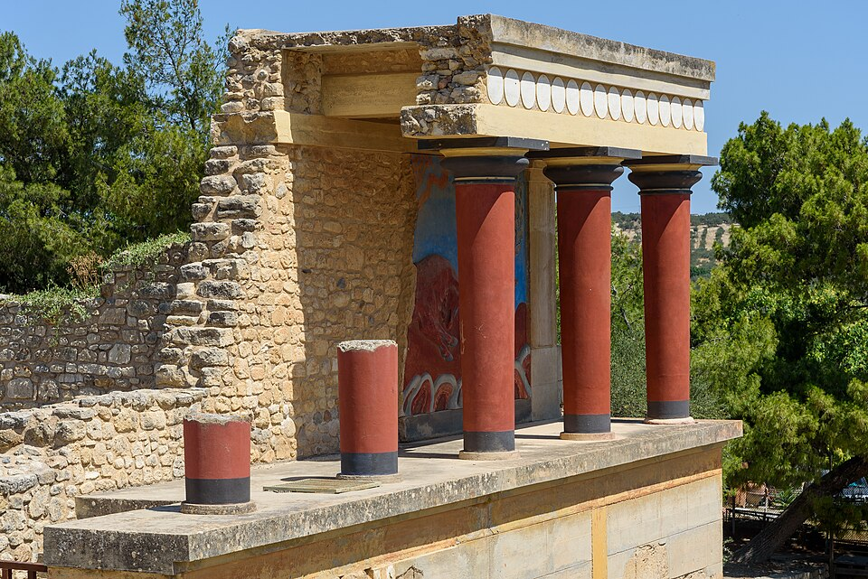
クレタ島の宮殿文化キクラデス美術を吸収
明るく開放的な美術 - 前1700年頃～
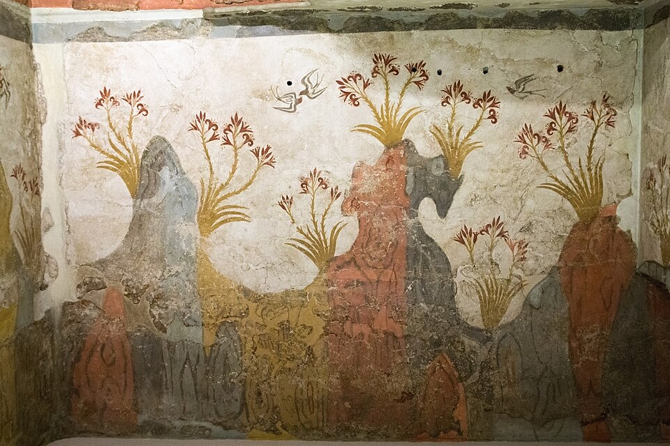
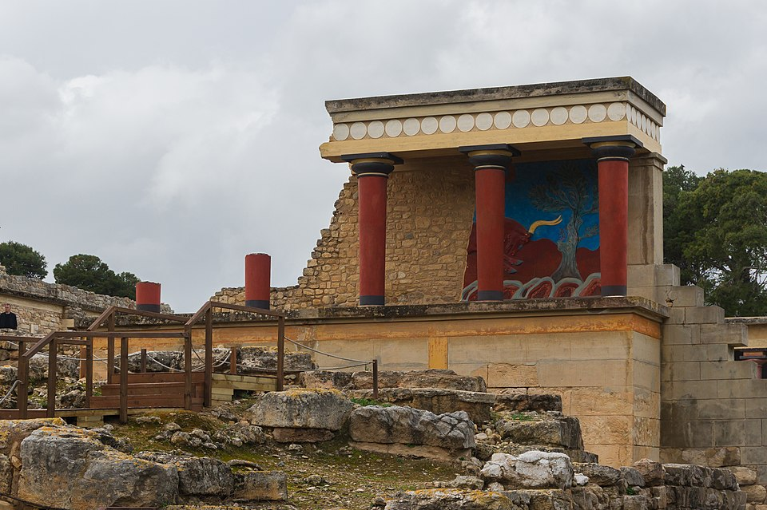
新宮殿時代の壁画鮮やかな色のフレスコ画
クノッソス以外にも壁画 - 前1400年頃
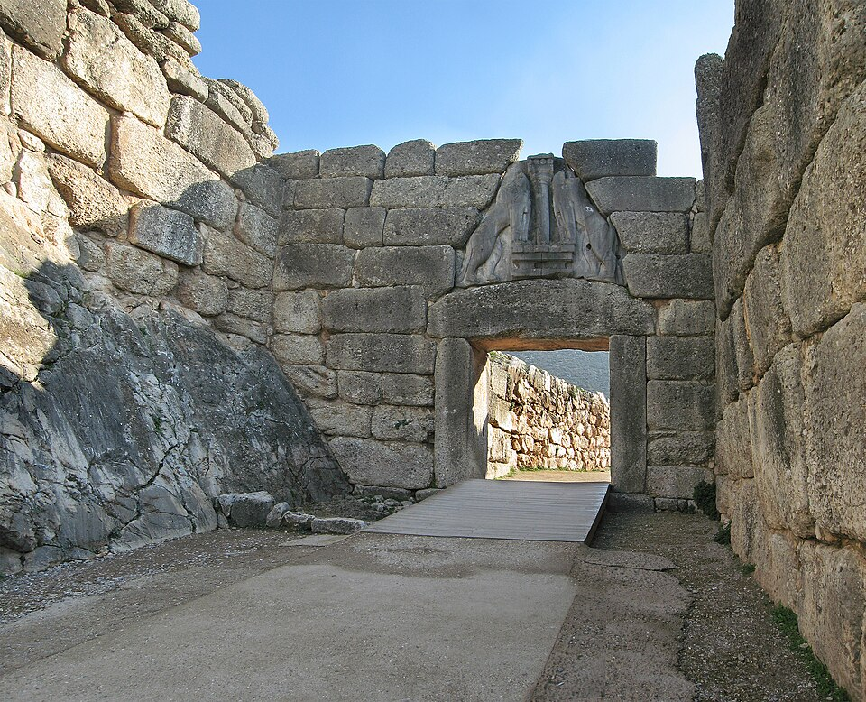
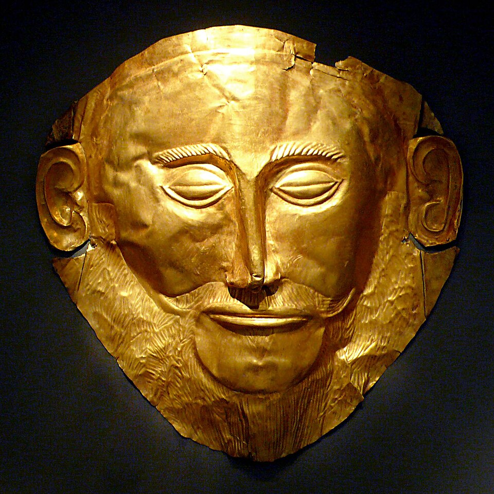
ミケーネ美術が継ぐ堅固な壁の宮殿
黄金工芸の副葬品 - 前1200年頃～
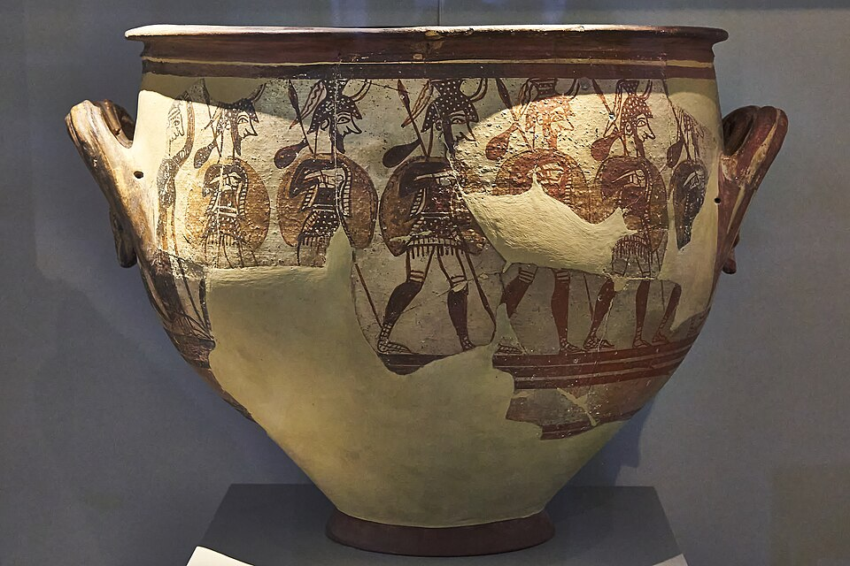
ミケーネ文明の衰退ドーリア人や「海の民」が原因とも
約400年の空白期間へ
クレタとミケーネの違い
エーゲ海の美術とは
エーゲ海の三つの美術
動画 0:35～メソポタミアやエジプトの文明が栄えるなか、地中海のギリシャ側に位置するエーゲ海でも、独自の文化が発展していました。穏やかな気候と豊かな海洋資源に恵まれたこの地域は、積極的な海上貿易によって繁栄し、高度な美術品を生み出しました。メソポタミアやエジプトとともに、西洋美術のルーツを築いた重要な地域です。
エーゲ海の人々は、開放的なものから閉鎖的なもの、不思議なものまで、さまざまな美術品を作りました。「エーゲ海の美術」は、実際には三つの地域に展開した美術の総称です。紀元前2800年頃に成立したキクラデス美術、紀元前2000年頃に成立したクレタ美術、紀元前1400年頃に成立したミケーネ美術に分けられます。
キクラデス美術
キクラデス：抽象的な大理石の人物像
動画 1:23～キクラデス美術の舞台は、200以上の島々からなるキクラデス諸島です。「キクラデス」は英語のサイクルとほぼ同じ意味を持ち、神聖な島とされるデロス島を囲んでいることに由来します。美術の始まりは紀元前2800年頃と推測され、メソポタミアではシュメール人が支配し、エジプトでは初期王朝時代にあたる頃です。
特徴は、極端に抽象化された人物像です。簡潔に人体を捉えた彫刻は、ピカソにも影響を与えたといわれます。その単純な形態は、現代に作られたものにも見えるほどです。
1:57の女性像と右の三人の群像には収蔵番号・所蔵館がなく、個体を確実に同定できない。似た別個体で代用しない。
《キクラデスの女性像（個体未同定）》
- 作者
- 作者不詳
- 制作時期
- 未確定
- 所蔵館
- 未確定
- 素材・形式
- 大理石彫刻
出典・画像について
これらの彫刻は大理石で作られています。パロス島は美しい大理石の産地として知られ、《ミロのヴィーナス》や《サモトラケのニケ》にも、この島の大理石が使われたといわれます。さらに、ナクソス島では大理石を切るための黒曜石、サントリーニ島では研磨用の軽石が多く採れるとされ、石の彫刻を作るのに適した環境でした。
 画像を拡大 ＋
画像を拡大 ＋
《ミロのヴィーナス》
- 作者
- 作者不詳
- 制作時期
- 紀元前150～125年頃
- 所蔵館
- ルーヴル美術館（Ma 399）
- 素材・形式
- 大理石彫刻
出典・画像について
 画像を拡大 ＋
画像を拡大 ＋
《サモトラケのニケ》
- 作者
- 作者不詳
- 制作時期
- 紀元前200～175年頃
- 所蔵館
- ルーヴル美術館
- 素材・形式
- 大理石彫刻
出典・画像について
キクラデス美術は、紀元前2000年頃にクレタ島で栄えたクレタ美術へ吸収される形で、徐々に姿を見せなくなりました。こうした影響もあってか、キクラデス諸島の美術をクレタ美術として紹介する資料もあります。細かく分類する場合には両者を分け、大きく分類する場合にはともにクレタ美術として扱うなど、分類の範囲による違いと考えられます。
クレタ美術
クレタ：宮殿とフレスコの技法
動画 2:46～クレタ島の文明は紀元前3000年頃にはすでにありましたが、その特色が現れ始めるのは紀元前2000年頃です。細かく分けると、紀元前1700年頃までを旧宮殿時代、紀元前1700年頃から紀元前1400年頃までを新宮殿時代と分類します。都クノッソスのミノス王にちなみ、ミノア美術、あるいはミノス美術とも呼ばれます。
クレタ美術の特色は、明るく開放的なことです。都に建てられたクノッソス宮殿は、当時の地震や侵略の影響で倒壊したとされますが、奥には鮮やかな色の柱と、創造性豊かなフレスコ画が見られます。

《クノッソス宮殿・北入口（現代復元部を含む）》
- 作者
- 建築者不詳／現代復元：アーサー・エヴァンズ監督下
- 制作時期
- 紀元前2千年紀（主な新宮殿期：前1700～1450年頃）／復元部：20世紀
- 所在地
- ギリシャ・クレタ島クノッソス遺跡
- 素材・形式
- 宮殿建築・遺構
出典・画像について
フレスコは、イタリア語で「新鮮」を意味します。壁に漆喰を塗り、乾くまでの間に、水で練った顔料で絵を描く技法です。漆喰が乾く過程で、水酸化カルシウムが空気中の二酸化炭素に触れ、できた半透明の被膜が顔料を閉じ込めます。フレスコ画は保存性に優れ、古い絵も美しく見ることができます。
太古の洞窟壁画では、壁が石灰岩でできていたため、偶然にも同じ現象が起こりました。いわば天然のフレスコ画にあたるものです。クレタの人々は、それを意図的に行っていました。
宮殿の壁画と神話
動画 4:12～クノッソス宮殿の入口には、牛のフレスコ画があります。玉座の間には、ワシの上半身とライオンの下半身を持つグリフィンが描かれています。

《クノッソス宮殿北入口の牛の浮彫壁画（現地復元）》
- 作者
- 作者不詳
- 制作時期
- 原作：前1650～1550年頃／現地復元：20世紀
- 所在地
- クノッソス遺跡・北入口（原断片：イラクリオン考古学博物館）
- 素材・形式
- 壁画（浮彫を伴う）
出典・画像について

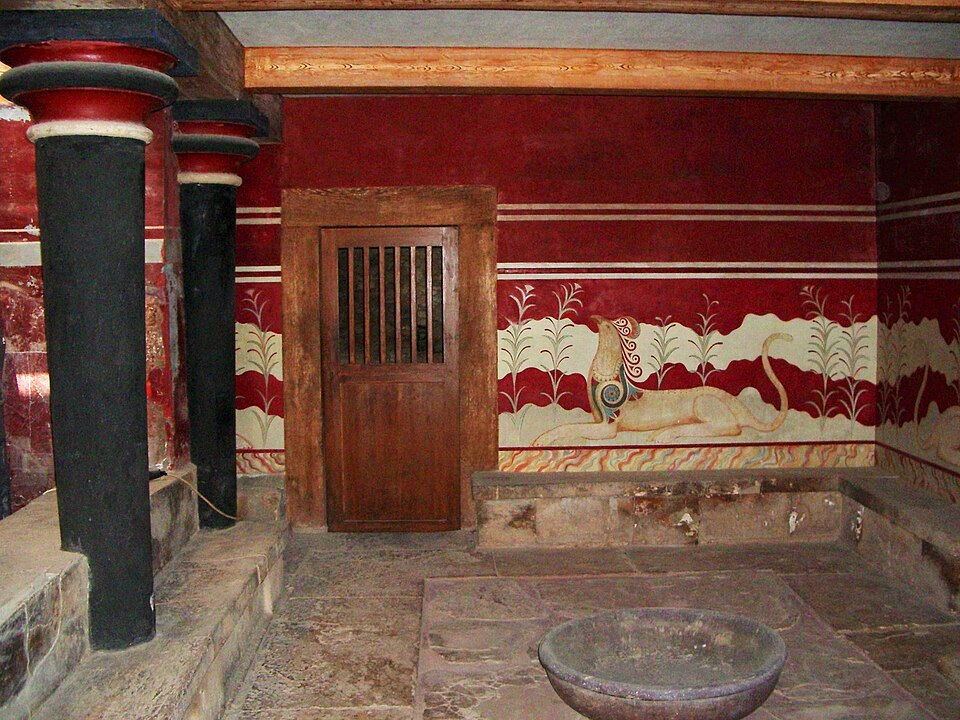
画像を拡大 ＋《クノッソス宮殿・玉座の間（復元壁画を含む）》
- 作者
- 作者不詳
- 制作時期
- 前1450～1350年頃／室内復元：20世紀
- 所在地
- ギリシャ・クレタ島クノッソス遺跡
- 素材・形式
- 宮殿内部・壁画
出典・画像について
当時の宗教観の詳細は分かっていませんが、クノッソス宮殿はギリシャ神話の舞台といわれています。その入り組んだ構造は、伝説上の怪物ミノタウロスを閉じ込めた迷宮、ラビリンスに結び付けられています。
ほかにも、恵まれた自然環境をそのまま表現したような、明るい絵が残されています。ほとんどの絵に共通するのは、鮮やかな色使いです。新宮殿時代には、クノッソス宮殿以外の場所にも個性的な壁画が残されています。

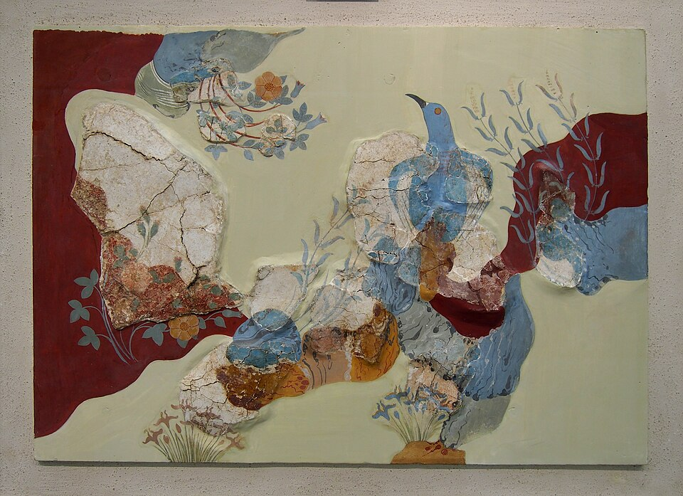
画像を拡大 ＋《青い鳥のフレスコ》
- 作者
- 作者不詳
- 制作時期
- 前1600～1500年頃
- 所蔵館
- イラクリオン考古学博物館
- 素材・形式
- 壁画
出典・画像について

《春のフレスコ（つばめとユリ）》
- 作者
- 作者不詳
- 制作時期
- 前16世紀頃（動画表記：前1550年頃）
- 所蔵館
- アテネ国立考古学博物館
- 素材・形式
- 壁画
出典・画像について
陶器と彫刻に表れた美意識
動画 4:51～壁画以外では、旧宮殿時代からカマレス陶器という特有の陶器が作られました。暗い地に幾何学模様を施した、薄手で極めて完成度の高い陶器です。

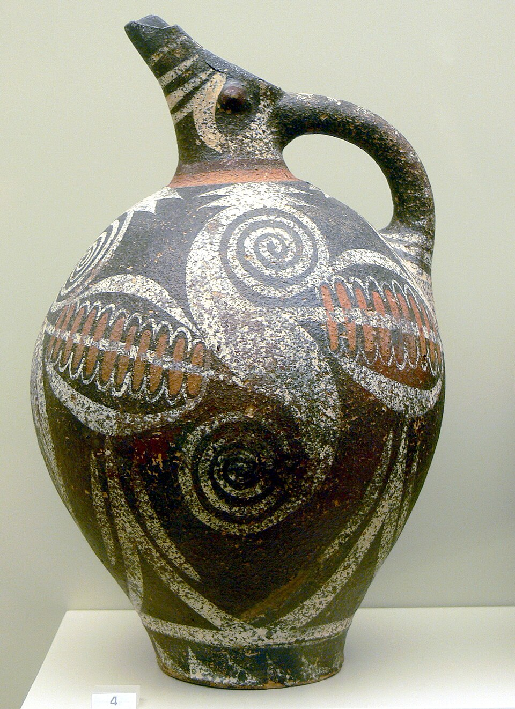
画像を拡大 ＋《カマレス式陶器の注口付き水差し》
- 作者
- 作者不詳
- 制作時期
- 古宮殿時代（紀元前2100〜1700年頃）
- 所蔵館
- イラクリオン考古学博物館
- 素材・形式
- 彩文陶器
出典・画像について
鳥のくちばしのような注口と、胴の赤・白の文様が見える。動画とは反対側からの写真。
画像出典：Wolfgang Sauber / Wikimedia Commons
CC BY-SA 3.0
作品情報：画像出典・利用条件
新宮殿時代になると、海洋文様と呼ばれる、海洋生物などの図像が施されるようになります。タコはヨーロッパでは、その見た目から「悪魔の魚」として嫌われる傾向があるとされますが、ギリシャの人々にはそれがほとんどありません。タコの図像は、紀元前から親しみを持って接していたことをうかがわせます。古くからの慣習が、現在の価値観にもつながっていると捉えられます。

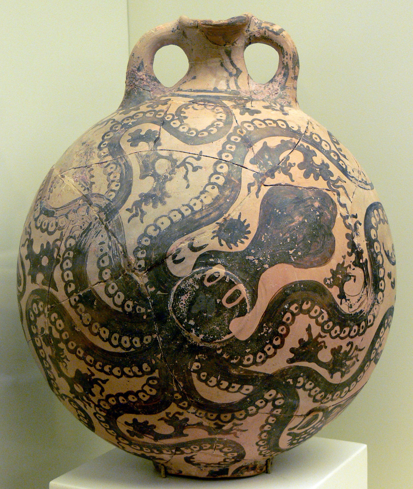
画像を拡大 ＋《タコ文様の海洋様式の壺》
- 作者
- 作者不詳
- 制作時期
- 紀元前1500〜1450年頃
- 所蔵館
- イラクリオン考古学博物館（Π3383）
- 素材・形式
- 彩文陶器
出典・画像について
パライカストロ出土。丸い胴にタコを描き、首に二つの輪形の把手を持つ。
彫刻も作られましたが、キクラデス美術の抽象的な人物像は、すでに作られなくなっています。両者には、まったく異なる美意識が見られます。個性的な美術品を生み出したクレタ美術には耐久性の乏しさという欠点がありました。当時の地震によって衰退し、ミケーネ人の侵略を許してクレタ文明は終わりました。

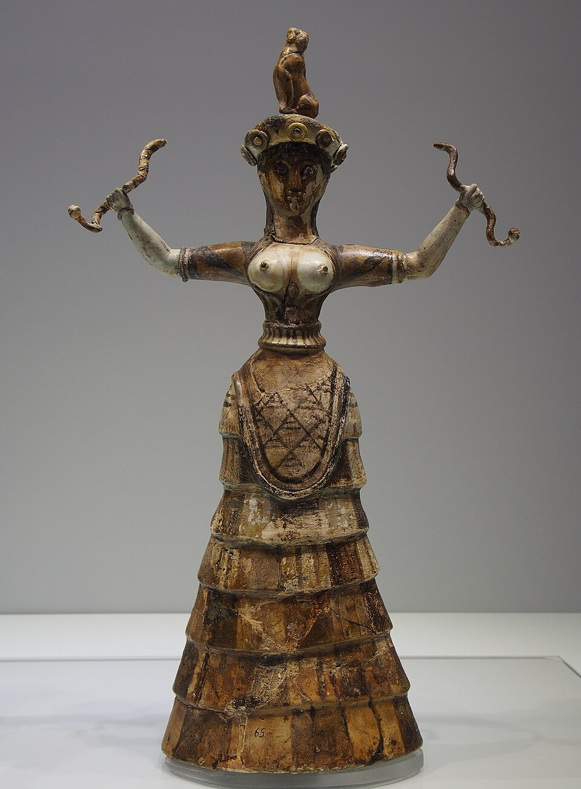
画像を拡大 ＋《蛇女神（両手に蛇を持つ小像）》
- 作者
- 作者不詳
- 制作時期
- 前1600年頃
- 所蔵館
- イラクリオン考古学博物館
- 素材・形式
- ファイアンス像
出典・画像について
原品の復元展示の写真。左右の手で蛇を持ち、頭上に小動物を載せた小像です。
画像出典：C messier／切抜き：Johnbod
CC BY-SA 4.0
作品情報：Wikimedia Commons：作品・画像・利用条件
制作メモ
画像の加工：Commonsで切抜き済み・追加加工なし
ミケーネ美術
ミケーネ：堅固な建築と黄金工芸
動画 5:50～その後を継いだのがミケーネ美術です。クレタの人々と同様に宮殿を建てましたが、強固で頑丈な壁を築いたことが特徴です。正確な設計図を用いた建築は、後のギリシャ建築を思い起こさせます。

《獅子の門》
- 作者
- 作者不詳（ミケーネ文化）
- 制作時期
- 前1250年頃
- 所在地
- ミケーネ遺跡、ギリシャ
- 素材・形式
- 石造城門・浮彫
出典・画像について
工芸品では黄金工芸が代表的で、《アガメムノンのマスク》や《ネストルの杯》が見つかっています。こうした豪華な副葬品を持つ墓の存在から、ミケーネ文明には明らかな支配階級がいたと推測されています。

《アガメムノンのマスク》
- 作者
- 作者不詳（ミケーネ文化）
- 制作時期
- 前16世紀
- 所蔵館
- アテネ国立考古学博物館
- 素材・形式
- 黄金の葬送マスク
出典・画像について
原品の写真。「アガメムノンのマスク」は通称です。アガメムノン本人の顔と確定したものではありません。

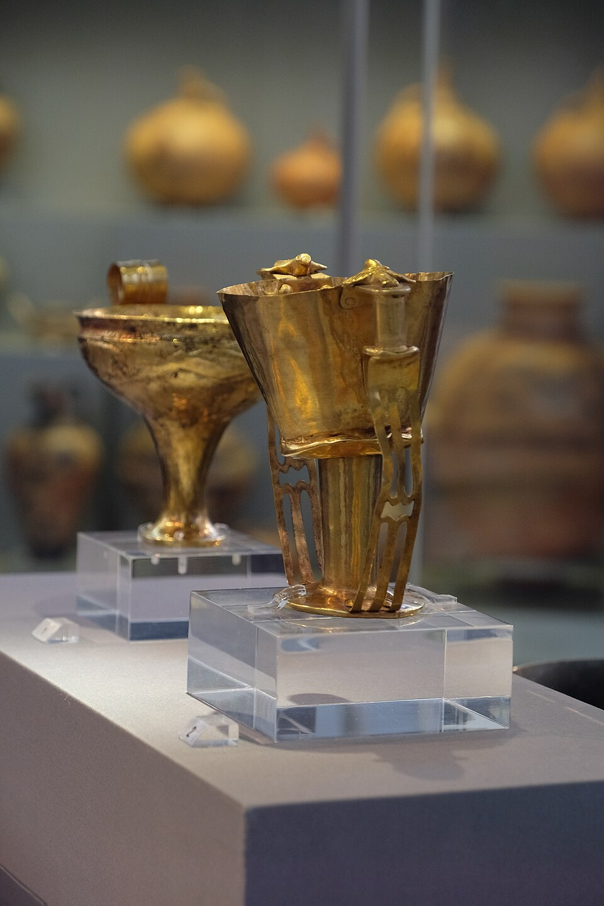
画像を拡大 ＋《ネストルの杯（ミケーネ出土）》
- 作者
- 作者不詳（ミケーネ文化）
- 制作時期
- 前16世紀
- 所蔵館
- アテネ国立考古学博物館
- 素材・形式
- 金製の杯
出典・画像について
原品の写真。「ネストルの杯」は通称です。神話上の人物の所有品と確定したものではありません。
陶器はクレタ美術を引き継ぎながらも、どこか簡素になっています。色合いも比較的地味で、堅い印象を与えます。描かれた図像からも、ミケーネの人々が軍事力に優れ、戦闘的だったことが読み取れます。

《戦士のクラテール（戦士の壺）》
- 作者
- 作者不詳（ミケーネ文化）
- 制作時期
- 前12世紀
- 所蔵館
- アテネ国立考古学博物館（1426）
- 素材・形式
- 彩文陶器
出典・画像について
原品の写真。動画画面の「前1300年頃」と異なり、画像出典は前12世紀としています。

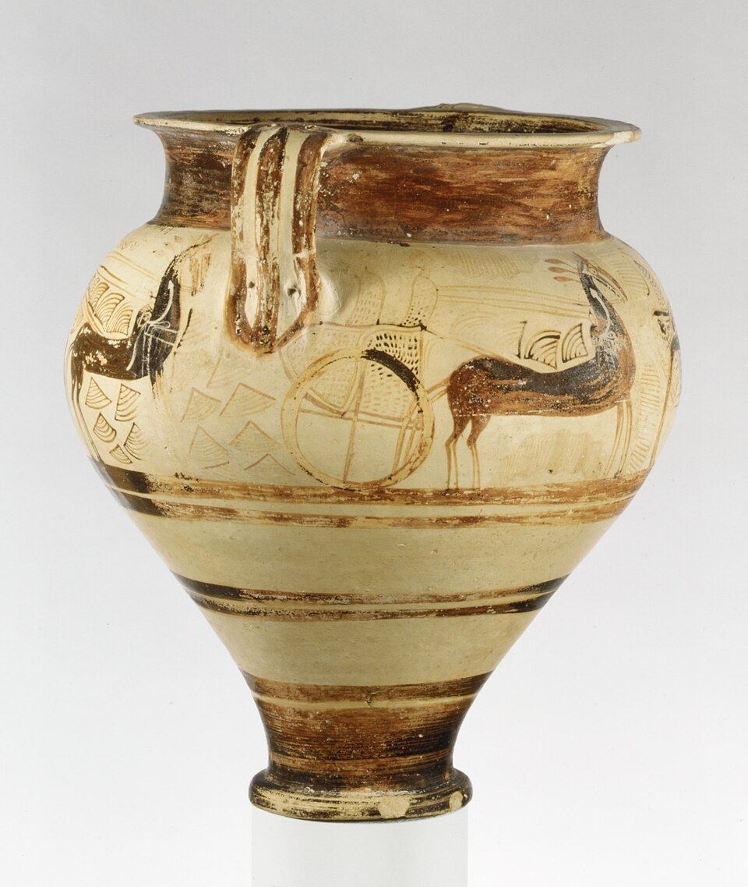
画像を拡大 ＋《戦車のクラテール》
- 作者
- 作者不詳（ミケーネ文化）
- 制作時期
- 前1375～1350年頃
- 所蔵館
- メトロポリタン美術館（74.51.964）
- 素材・形式
- 彩文陶器
出典・画像について
しかし、ミケーネ文明も紀元前1200年頃から急激に衰退しました。当時南下してきたドーリア人の大移動や、「海の民」と呼ばれる集団による戦乱が原因ともいわれますが、詳細は不明です。その後、ギリシャでは約400年にわたり、出土する遺物の少ない、謎の空白期間が続くことになります。
要点まとめ
- エーゲ海の美術は海上貿易で栄えた地域の美術の総称で、紀元前2800年頃のキクラデス美術、紀元前2000年頃のクレタ美術、紀元前1400年頃のミケーネ美術に分けられる。
- キクラデス美術は200以上の島々からなるキクラデス諸島で生まれ、極端に抽象化された大理石の人物像が特徴。ピカソにも影響を与えたといわれる。パロス島は大理石の産地。
- クレタ美術（ミノア美術）は旧宮殿時代と新宮殿時代に分けられ、明るく開放的なのが特色。都クノッソスの宮殿には鮮やかな柱とフレスコ画が残る。
- フレスコは壁に塗った漆喰が乾く前に水で練った顔料で描く技法で、保存性に優れる。クノッソス宮殿には牛やグリフィンの壁画があり、ミノタウロスの迷宮ラビリンスの伝説に結び付けられている。
- 旧宮殿時代には暗い地に幾何学模様を施したカマレス陶器が、新宮殿時代にはタコなど海洋生物を描いた海洋文様の陶器が作られた。クレタ文明は地震による衰退とミケーネ人の侵略で終わった。
- ミケーネ美術は強固な壁の宮殿と、《アガメムノンのマスク》《ネストルの杯》などの黄金工芸が代表。紀元前1200年頃から衰退し、ギリシャでは約400年の空白期間が続いた。
確認問題
答えを考えてから開いてください。選択問題は選ぶとすぐ正誤と解説が出ます（選択肢の順番は開くたびに変わります）。各問題のリンクから該当の章や作品カードへ戻れます。
選択問題：0／5問回答・正解0
A. 一問一答答えを考えてから開く
問1壁に漆喰を塗り、乾くまでの間に水で練った顔料で絵を描く、イタリア語で「新鮮」を意味する技法は何か。
答えを見る
問2クノッソス宮殿の入り組んだ構造が結び付けられている、伝説の怪物ミノタウロスを閉じ込めた迷宮を何と呼ぶか。
答えを見る
問3クレタの旧宮殿時代から作られた、暗い地に幾何学模様を施した薄手の陶器を何と呼ぶか。
答えを見る
B. 4択選ぶとすぐ正誤と解説
問4エーゲ海の三つの美術を、成立の古い順に並べたものはどれか。
→ 本文で確認（エーゲ海の三つの美術）
問5極端に抽象化された大理石の人物像を特徴とし、ピカソにも影響を与えたといわれる美術はどれか。
→ 本文で確認（キクラデス：抽象的な大理石の人物像）
問6クレタ美術が「ミノア美術」とも呼ばれる理由はどれか。
→ 本文で確認（クレタ：宮殿とフレスコの技法）
C. 図版問題画像を見て答える
問7ミケーネの黄金工芸を代表するこのマスクの名前を答えよ。
答えを見る
問8強固で頑丈な壁を特徴とする、この遺構の名前はどれか。
→ 作品カードで確認
問9この《蛇女神》の小像は、どの美術に属するか。
→ 作品カードで確認